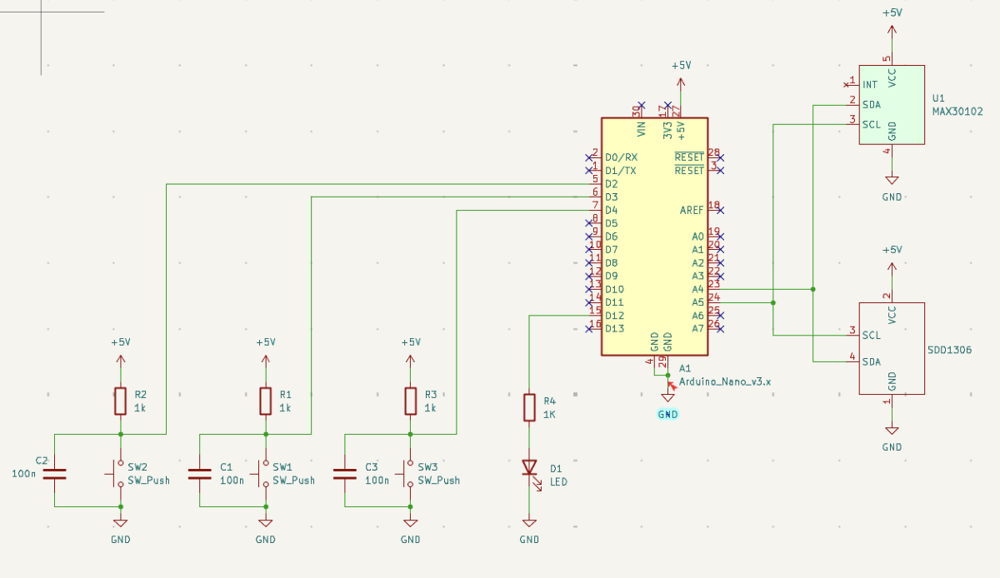
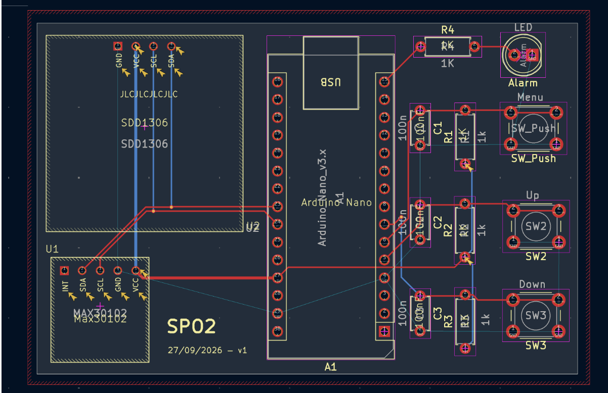
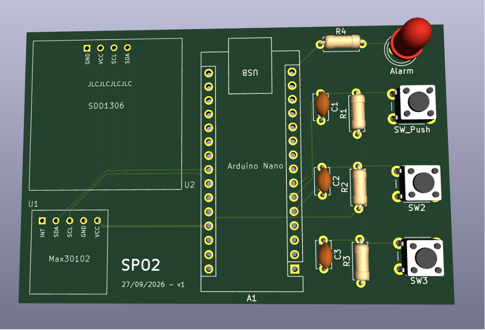
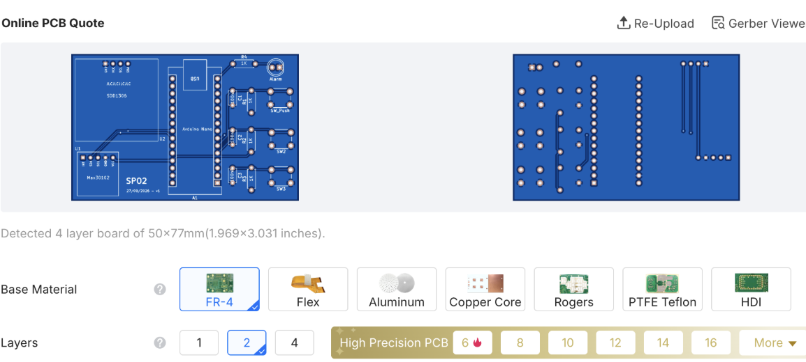
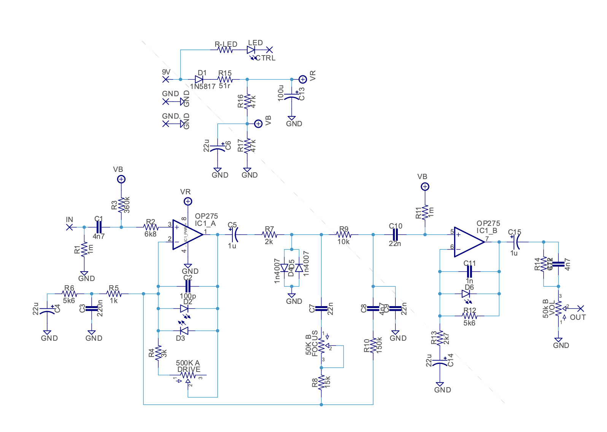

Process
Started by creating a simple Arduino circuit in KiCad. The MAX30102 and SSD1306 are custom-made parts.

Fast forward to first PCB completed! Got used to PCB layout, footprints, vias, DRC checks, and Gerber files.



Time for the guitar pedal now!
Reference circuit:

After spending a while learning all about op-amps, diode clipping, potentiometers, and applying all that to analyzing the circuit, I built the schematic for it in KiCad:
Results
Schematic complete! Now moving into PCB layout, with the board designed by end of day Monday, Oct. 5.